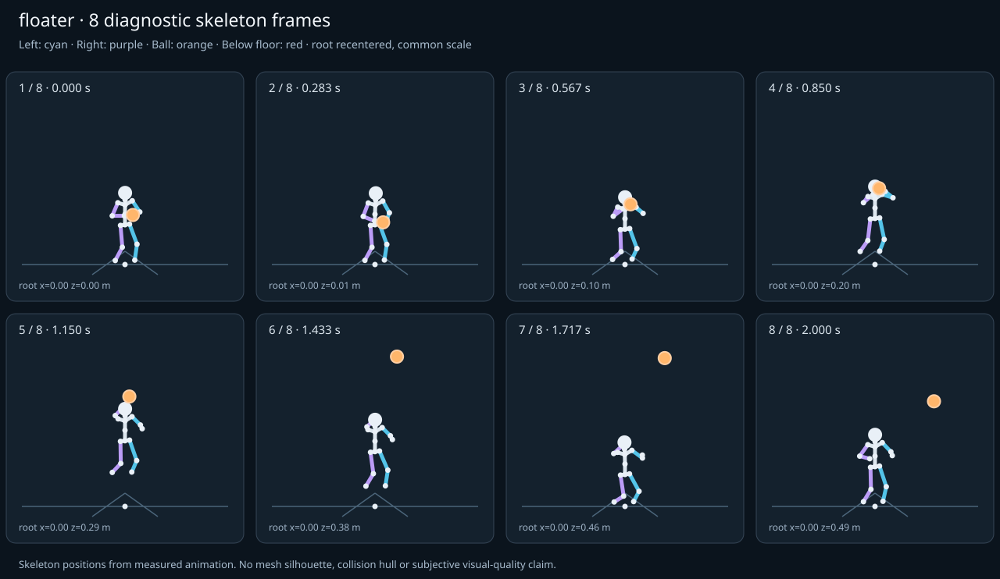

מה הוריד את הציון
- קפיצות פוזה: LeftForeArm בזמן 1.0833 ש׳; קפיצת סיבוב שקולה 24.9097 מעלות ב־60Hz (צהוב)
- כניסה ויציאה מול המתנה: פער ב־כניסה מול המתנה; יחס חריגה 2.0148 (צהוב)
כיסוי: 100%. לא כל מדד חל על כל קליפ; הסטטוס והראיות מפורטים למטה.
שמונה פריימים
תצוגת שלד אבחונית שנבנתה מהפריימים הנמדדים. צד שמאל בכחול, ימין בסגול, כדור בכתום. מיקום השורש ממורכז לצפייה; מיקומו בעולם כתוב בכל פריים.

המדדים והראיות
| מדד | מצב | ערך | ציון | סף ופרטי מדידה |
|---|---|---|---|---|
| החלקת רגליים | ירוק | 0.001 height ratio | 99 | {
"definition": {
"label": "החלקת רגליים",
"unit": "height ratio",
"green": 0.01,
"yellow": 0.035,
"weight": 18,
"description": "Maximum horizontal sole displacement from the first sample of each declared support window, divided by character height. Inferred support is used only when no windows were supplied."
},
"value": 0.000528,
"status": "green",
"score": 98.94,
"evidence": {
"coordinateSpace": "authored reference world (simulation-owned)",
"supportSource": "declared",
"windows": 4,
"samples": 152,
"maxDriftMeters": 0.000893,
"p95SpeedMetersPerSecond": 0.023533,
"worst": {
"bone": "RightFoot",
"t": 0.75,
"start": 0,
"end": 0.8,
"driftMeters": 0.000893
}
}
} |
| חדירה לרצפה | ירוק | 0.001 height ratio | 96 | {
"definition": {
"label": "חדירה לרצפה",
"unit": "height ratio",
"green": 0.005,
"yellow": 0.02,
"weight": 15,
"description": "Maximum depth of the supplied sole probe points and all skeletal joint centers below the declared floor plane, divided by height. Sole probes are not a mesh collision audit."
},
"value": 0.000885,
"status": "green",
"score": 96.46,
"evidence": {
"samples": 2420,
"floorY": 0,
"probeKind": "declared sole probes plus skeletal joint centers (no mesh surfaces)",
"maxDepthMeters": 0.001495,
"worst": {
"t": 0.75,
"bone": "RightFoot",
"depthMeters": 0.001495,
"y": -0.001495
}
}
} |
| קפיצות פוזה | צהוב | 1.661 discontinuity ratio | 67 | {
"definition": {
"label": "קפיצות פוזה",
"unit": "discontinuity ratio",
"green": 1,
"yellow": 2.5,
"weight": 18,
"description": "Maximum adjacent 60 Hz-equivalent step: root-relative marker displacement / 0.04 height, root-relative rotation / 15 degrees, or root translation / 0.08 height. A fast continuous action can also exceed this screening threshold."
},
"value": 1.660644,
"status": "yellow",
"score": 66.79,
"evidence": {
"adjacentPairs": 120,
"observations": 2040,
"maxDegrees60Hz": 24.909656,
"maxMarkerStepHeight60Hz": 0.061508,
"maxRootStepHeight60Hz": 0.003507,
"worst": {
"ratio": 1.6606437548104447,
"t": 1.083333,
"previousTime": 1.066667,
"bone": "LeftForeArm",
"markerStepHeight60Hz": 0.057055,
"degrees60Hz": 24.909656
}
}
} |
| חריגות אנטומיות | ירוק | 0 % affected frames | 100 | {
"definition": {
"label": "חריגות אנטומיות",
"unit": "% affected frames",
"green": 0.5,
"yellow": 3,
"weight": 14,
"description": "Percentage of frames with elbow or knee flexion above 165 degrees, neck bend above 80 degrees, or a segment length changing by more than 5%. Optional calibrated hinge checks detect reverse knee flexion above 8 degrees. Conservative marker limits do not diagnose axial joint twist."
},
"value": 0,
"status": "green",
"score": 100,
"evidence": {
"testedFrames": 121,
"affectedFrames": 0,
"checks": 2057,
"maxLimbFlexionDegrees": 127.395999,
"maxRelativeSegmentLengthChange": 0,
"hingeDirectionChecked": true,
"axialTwistChecked": false,
"violations": []
}
} |
| מגע בכדור | ירוק | 0.001 height ratio | 99 | {
"definition": {
"label": "מגע בכדור",
"unit": "height ratio",
"green": 0.015,
"yellow": 0.05,
"weight": 13,
"description": "Maximum absolute distance from the ball surface to the sampled, bone-transformed declared contact point, divided by height. Events are evaluated at their exact declared times by interpolation."
},
"value": 0.00077,
"status": "green",
"score": 98.97,
"evidence": {
"radiusMeters": 0.12,
"samples": 131,
"missed": [],
"contacts": [
{
"t": 0.45,
"bone": "LeftHand",
"gapMeters": 0.001302,
"signedGapMeters": -0.001302,
"centerDistanceMeters": 0.118698,
"contactPoint": [
0.104171,
0.991762,
0.355764
],
"ballCenter": [
-0.014158,
0.99138,
0.365096
],
"declaredLocalPoint": true
},
{
"t": 1.116667,
"bone": "RightHand",
"gapMeters": 0.000913,
"signedGapMeters": 0.000913,
"centerDistanceMeters": 0.120913,
"contactPoint": [
-0.227478,
1.998785,
0.624704
],
"ballCenter": [
-0.131856,
2.071086,
0.608923
],
"declaredLocalPoint": true
},
{
"t": 0.483333,
"bone": "LeftHand",
"gapMeters": 0.00089,
"signedGapMeters": -0.00089,
"centerDistanceMeters": 0.11911,
"contactPoint": [
0.096642,
1.060677,
0.364511
],
"ballCenter": [
-0.022179,
1.059537,
0.37272
],
"declaredLocalPoint": true
},
{
"t": 0.516667,
"bone": "LeftHand",
"gapMeters": 0.000779,
"signedGapMeters": -0.000779,
"centerDistanceMeters": 0.119221,
"contactPoint": [
0.08765,
1.125266,
0.371369
],
"ballCenter": [
-0.031244,
1.124876,
0.380196
],
"declaredLocalPoint": true
},
{
"t": 0.75,
"bone": "RightHand",
"gapMeters": 0.000757,
"signedGapMeters": -0.000757,
"centerDistanceMeters": 0.119243,
"contactPoint": [
-0.175753,
1.324985,
0.450515
],
"ballCenter": [
-0.069939,
1.379597,
0.4442
],
"declaredLocalPoint": true
},
{
"t": 0.983333,
"bone": "LeftHand",
"gapMeters": 0.000656,
"signedGapMeters": -0.000656,
"centerDistanceMeters": 0.119344,
"contactPoint": [
0.008261,
1.912134,
0.55402
],
"ballCenter": [
-0.1106,
1.912114,
0.564757
],
"declaredLocalPoint": true
},
{
"t": 0.416667,
"bone": "LeftHand",
"gapMeters": 0.000639,
"signedGapMeters": -0.000639,
"centerDistanceMeters": 0.119361,
"contactPoint": [
0.11112,
0.930406,
0.346456
],
"ballCenter": [
-0.007772,
0.930534,
0.357023
],
"declaredLocalPoint": true
},
{
"t": 0.45,
"bone": "RightHand",
"gapMeters": 0.000623,
"signedGapMeters": -0.000623,
"centerDistanceMeters": 0.119377,
"contactPoint": [
-0.132583,
0.991811,
0.35005
],
"ballCenter": [
-0.014158,
0.99138,
0.365096
],
"declaredLocalPoint": true
},
{
"t": 0.916667,
"bone": "LeftHand",
"gapMeters": 0.000399,
"signedGapMeters": -0.000399,
"centerDistanceMeters": 0.119601,
"contactPoint": [
0.027841,
1.72532,
0.510339
],
"ballCenter": [
-0.091254,
1.725648,
0.521318
],
"declaredLocalPoint": true
},
{
"t": 0.416667,
"bone": "RightHand",
"gapMeters": 0.000396,
"signedGapMeters": -0.000396,
"centerDistanceMeters": 0.119604,
"contactPoint": [
-0.12625,
0.930418,
0.340649
],
"ballCenter": [
-0.007772,
0.930534,
0.357023
],
"declaredLocalPoint": true
},
{
"t": 0.583333,
"bone": "RightHand",
"gapMeters": 0.000381,
"signedGapMeters": 0.000381,
"centerDistanceMeters": 0.120381,
"contactPoint": [
-0.168916,
1.243952,
0.380412
],
"ballCenter": [
-0.04953,
1.245482,
0.395782
],
"declaredLocalPoint": true
},
{
"t": 1.083333,
"bone": "RightHand",
"gapMeters": 0.00038,
"signedGapMeters": 0.00038,
"centerDistanceMeters": 0.12038,
"contactPoint": [
-0.22635,
1.959128,
0.602475
],
"ballCenter": [
-0.131496,
2.032138,
0.589678
],
"declaredLocalPoint": true
},
{
"t": 0.95,
"bone": "LeftHand",
"gapMeters": 0.000362,
"signedGapMeters": -0.000362,
"centerDistanceMeters": 0.119638,
"contactPoint": [
0.018174,
1.823412,
0.532463
],
"ballCenter": [
-0.100988,
1.822918,
0.54311
],
"declaredLocalPoint": true
},
{
"t": 0.916667,
"bone": "RightHand",
"gapMeters": 0.000347,
"signedGapMeters": 0.000347,
"centerDistanceMeters": 0.120347,
"contactPoint": [
-0.185594,
1.652018,
0.534056
],
"ballCenter": [
-0.091254,
1.725648,
0.521318
],
"declaredLocalPoint": true
},
{
"t": 0.75,
"bone": "LeftHand",
"gapMeters": 0.000325,
"signedGapMeters": -0.000325,
"centerDistanceMeters": 0.119675,
"contactPoint": [
0.049272,
1.379024,
0.43369
],
"ballCenter": [
-0.069939,
1.379597,
0.4442
],
"declaredLocalPoint": true
},
{
"t": 0.55,
"bone": "LeftHand",
"gapMeters": 0.000301,
"signedGapMeters": -0.000301,
"centerDistanceMeters": 0.119699,
"contactPoint": [
0.078749,
1.186416,
0.378911
],
"ballCenter": [
-0.040618,
1.186922,
0.387804
],
"declaredLocalPoint": true
},
{
"t": 0.883333,
"bone": "RightHand",
"gapMeters": 0.000296,
"signedGapMeters": 0.000296,
"centerDistanceMeters": 0.120296,
"contactPoint": [
-0.176964,
1.551746,
0.513238
],
"ballCenter": [
-0.082597,
1.625305,
0.500784
],
"declaredLocalPoint": true
},
{
"t": 0.85,
"bone": "RightHand",
"gapMeters": 0.000241,
"signedGapMeters": 0.000241,
"centerDistanceMeters": 0.120241,
"contactPoint": [
-0.170467,
1.452797,
0.496019
],
"ballCenter": [
-0.075997,
1.525972,
0.482649
],
"declaredLocalPoint": true
},
{
"t": 0.483333,
"bone": "RightHand",
"gapMeters": 0.000224,
"signedGapMeters": -0.000224,
"centerDistanceMeters": 0.119776,
"contactPoint": [
-0.141137,
1.06082,
0.358801
],
"ballCenter": [
-0.022179,
1.059537,
0.37272
],
"declaredLocalPoint": true
},
{
"t": 0.55,
"bone": "RightHand",
"gapMeters": 0.000223,
"signedGapMeters": 0.000223,
"centerDistanceMeters": 0.120223,
"contactPoint": [
-0.15993,
1.186372,
0.373043
],
"ballCenter": [
-0.040618,
1.186922,
0.387804
],
"declaredLocalPoint": true
}
],
"contactDetailsTruncated": true,
"coordinateSpace": "authored reference world (simulation-owned)"
}
} |
| כניסה ויציאה מול המתנה | צהוב | 2.015 continuity ratio | 65 | {
"definition": {
"label": "כניסה ויציאה מול המתנה",
"unit": "continuity ratio",
"green": 1,
"yellow": 3,
"weight": 10,
"description": "Worst entry/exit mismatch to the best matching idle phase: RMS marker error / 0.04 height, RMS bone rotation / 25 degrees, or RMS endpoint velocity error / 0.75 height per second. Horizontal root translation is aligned; root height and body pose remain measurable."
},
"value": 2.014809,
"status": "yellow",
"score": 64.78,
"evidence": {
"entry": {
"ratio": 2.0148091598919677,
"t": 0,
"idleTime": 2.2,
"markers": 17,
"rmsPositionHeight": 0.052105,
"rmsRotationDegrees": 50.370229,
"rmsVelocityHeightPerSecond": 0.008782,
"velocityEvaluated": true
},
"exit": {
"ratio": 1.9420181927944413,
"t": 2,
"idleTime": 1.966667,
"markers": 17,
"rmsPositionHeight": 0.054046,
"rmsRotationDegrees": 48.550455,
"rmsVelocityHeightPerSecond": 0.069285,
"velocityEvaluated": true
},
"worstEndpoint": "entry",
"alignment": "horizontal root translation; raw asset poses used when provided"
}
} |
| מהירות גוף מול צעדים | לא חל | — relative speed error | — | {
"definition": {
"label": "מהירות גוף מול צעדים",
"unit": "relative speed error",
"green": 0.2,
"yellow": 0.5,
"weight": 8,
"description": "Relative difference between average root travel speed and the median backward support-foot sweep speed relative to the root. Cadence and implied stride lengths are also reported. In-place clips need an explicit reference travel scenario; stationary actions are not scored as locomotion."
},
"value": null,
"status": "not-applicable",
"score": null,
"reason": "This action is not declared locomotion.",
"evidence": {}
} |
| סימטריה | ירוק | 0 relative mismatch | 100 | {
"definition": {
"label": "סימטריה",
"unit": "relative mismatch",
"green": 0.03,
"yellow": 0.1,
"weight": 4,
"description": "Maximum bilateral segment-length mismatch. Looping locomotion additionally compares reflected half-cycle leg markers; explicit pose symmetry compares simultaneous bilateral markers. One-sided actions retain unscored motion diagnostics, so a valid kick or dribble arm is not penalized for intentional asymmetry."
},
"value": 0,
"status": "green",
"score": 100,
"evidence": {
"mode": "structural",
"modeSource": "structural default for intentional asymmetry",
"structuralMismatch": 0,
"segments": [
{
"segment": "Arm-ForeArm",
"mismatch": 0
},
{
"segment": "ForeArm-Hand",
"mismatch": 0
},
{
"segment": "UpLeg-Leg",
"mismatch": 0
},
{
"segment": "Leg-Foot",
"mismatch": 0
}
],
"motionRmsHeight": null,
"worstMotion": null,
"bilateralPoseRmsHeightUnscored": 0.096304,
"note": "One-sided authored actions are checked for structural symmetry only."
}
} |